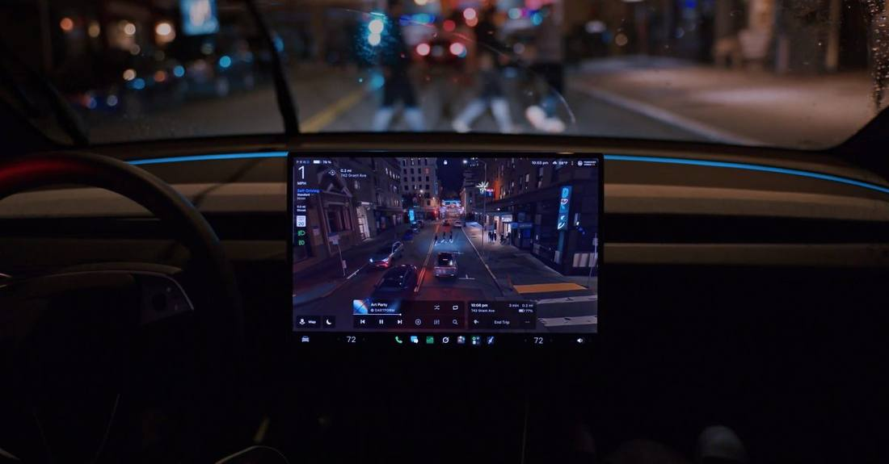

Tesla Begins FSD v15 Rollout, Claims 25x Safety Gain With New Reality View
Tesla announced on X on November 21, 2026 that Full Self-Driving (Supervised) v15 is now starting to roll out to a first wave of customers, with wide release targeted for December. The release notes cite a new vision encoder Tesla says improves the critical intervention rate by 25x, plus a new live Tesla Reality View visualization, fleet-learned navigation, and fixes aimed at signs, potholes, school zones and speed cameras.

- 01THE PROMISE — In April 2026, Elon Musk said FSD v15 would far exceed human levels of safety; in August, Tesla told JPMorgan v15 was a step-change built on seven core technologies, about 40 percent of them already running in its Robotaxi fleet in Austin.
- 02THE LAUNCH — On November 21, 2026, Tesla announced on X that FSD v15 is now starting to roll out, and its Tesla Super Intelligence account posted the full release notes; Ashok Elluswamy confirmed the first wave of customers gets it today.
- 03THE FEATURES — The release notes cite a new vision encoder shared between FSD, Robotaxi and Optimus, Tesla Reality View, fleet-learned navigation, and improved detection of signs, potholes, debris, small animals and standing water, plus speed-camera slowdown and Bike Rack Mode.
WHAT HAPPENEDWhat Happened
Tesla announced on X on Saturday, November 21, 2026 that Full Self-Driving (Supervised) v15 is "now starting to roll out" to a first wave of customers, with wide release targeted for December. Tesla AI software lead Ashok Elluswamy confirmed the rollout starts today to early-access users, writing that "FSD v15 releasing to the first wave of customers today."
The release notes say v15 upgrades every part of the end-to-end driving network. The headline change is a new vision encoder shared between FSD, Robotaxi and Optimus, trained on millions of internet videos, which Tesla says improves the critical intervention rate by 25x. A new live visualization, Tesla Reality View, replaces the separate model signals with a single end-to-end view that uses less compute and lets drivers see and interact with what FSD plans to do.
The update also targets FSD's most complained-about weaknesses: improved detection of road signs, small animals, road debris, chains, potholes, road details and deep standing water; better speed handling for each driver profile, school zones, speed limits and inclement weather; fleet-learned navigation for the start and end of trips; parking selection from personalized parking history; and a speed-camera slowdown plus a new Bike Rack Mode.
WHY IT MATTERSThe 25x claim is the right metric with no number behind it
The critical intervention rate is the correct yardstick for progress toward unsupervised driving, and a 25x improvement would be enormous if it held across the fleet. Electrek notes its own earlier data suggested FSD v14 could go a couple thousand miles between critical interventions, which would put v15 near 50,000 miles, well beyond the roughly 10,000 miles it has said Tesla needs for a limited unsupervised service.
But Tesla still does not publish the underlying number, only the multiplier, and FSD has never improved in a straight line: v14 arrived in October 2025 with hallucinations, brake stabbing and excessive speeding, improved, then went backward in the v14.2 updates. The claim is worth watching precisely because it is specific enough to be tested by early owners' data, and vague enough that Tesla has not yet had to prove it.
WHAT IS STILL UNKNOWNThe weak spots on the list are the ones regulators are watching
Almost every driving improvement in v15 targets an area where FSD struggles today and where regulators are already looking. A September test by Brussels nonprofit Johanna.be found FSD exceeded the limit in 55 percent of the 30 km/h zones it drove through, and NHTSA is reviewing a petition claiming Tesla's Robotaxis speed through active school zones, on top of an investigation opened in October 2025 into FSD traffic-law violations.
What is not yet known is how much better v15 actually is, which vehicles get it first, or when the wide December release lands. Tesla previously told investors its AI4 computer is enough to run v15. One change goes the other way: Tesla is decreasing the strictness of driver monitoring in higher-speed profiles even as sleeping drivers on FSD keep making headlines.
SIGNAL JUDGMENT — ANALYSISA step-change claim that owners' data will now have to prove
Tokenta Signal's judgment: v15 is the update Tesla has been promising since April, when Elon Musk said it would far exceed human levels of safety, and since August, when Tesla told JPMorgan it was a step-change built on seven core technologies. The release notes finally name the mechanism: a vision encoder trained on millions of internet videos and shared across FSD, Robotaxi and Optimus. The claim to discount is the 25x multiplier on its own, because Tesla publishes no baseline intervention number to check it against. The claim to act on is the target list: signs, potholes, school zones and speed cameras are exactly where FSD's failures are documented and where regulators are watching, so the first weeks of owner data will settle whether this is the step-change or another point release that goes backward.
WHAT REMAINS UNCERTAINWhat Remains Uncertain
EVIDENCEEvidence
Tesla announced on X on November 21, 2026 that Full Self-Driving (Supervised) v15 is now starting to roll out to a first wave of customers, with a new vision encoder Tesla says improves the critical intervention rate by 25x and a new live Tesla Reality View visualization.
PRIMARY SOURCESPrimary Sources
- Electrek: Tesla launches FSD v15, targets its biggest weaknesses, from signs to potholes
https://electrek.co/2026/11/21/tesla-fsd-v15-rollout-25x-safety-reality-view/ - DriveTeslaCanada: Tesla Begins FSD v15 Rollout With Major Safety and Navigation Upgrades
https://driveteslacanada.ca/news/tesla-fsd-v15-rollout/ - Tesla on X: FSD v15 now starting to roll out
https://x.com/Tesla